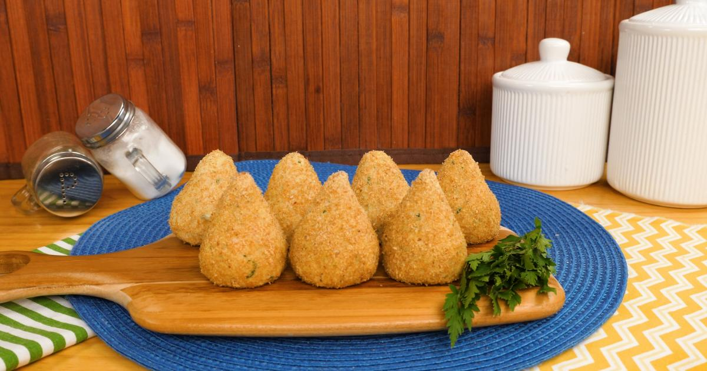

Coxinhas Low Carb

Description
Coxinhas are an all-time favorite Brazilian snack. This low-carb version is perfect for those who want to satisfy their cravings but are minding their diet!
This protein-loaded snack is baked instead of fried (like the original coxinha). It can also be frozen for up to three-months, if you like to meal prep.
Ingredients
- 1 dash of olive oil
- 5 cloves of garlic, minced
- 500g of chicken breast, cooked and shredded
- 1 cauliflower, chopped
- 100g cheese, shredded
- 1 onion, diced
- 1 tomato, diced
- 150g ricotta
- 1 cup flax seed flour
- Salt and pepper
- Parsley
Steps
- Heat the olive oil in a pan. Add the onion and garlic. Cook until onion is soft.
- Add the tomato and let it cook for a bit.
- Add the chicken, salt, pepper and parsley.
- Tranfer mixture to food processor and add cauliflower. Mix until it forms a dough.
- In another bowl, mix the cheese and the ricotta.
- Open a piece of the dough in your hand. Fill with the cheese mixture. Close it and shape into a coxinha.
- Roll it on the flax seed flour.
- Put the coxinhas in a pan. Bake at 180 degrees for 35 minutes.